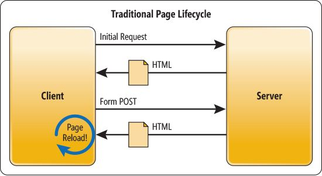

class: center, middle # Understanding Web Frameworks --- ## Summary .breadcrumbs[<a href="#1">Understanding Web Frameworks</a>] Learn what web frameworks are and how they are useful when developping a web applicaiton. This material is part of the [Géoinformatique opérationnelle : Développement avancé d’outils](https://github.com/Tazaf/heig-mdt-gio1) for the [Master of Science HES-SO en Développement Territoriel](https://master.hes-so.ch/domaines/ia/mdt). <!-- - TODO: Frontend VS Backend - TODO: Single Page Applications - TODO: MVVM Architectural pattern - TODO: Web Frameworks --> --- ## Traditional Client/Server architecture .breadcrumbs[<a href="#1">Understanding Web Frameworks</a>] <!-- Where we talk about how internet revolves around clients and servers --> The internet world is mainly composed of clients, that is the users devices (phone, tablet, computer), and servers, that is computers that store and provide the websites or webapps. <img src="images/client-server.svg" /> When you navigate on internet, your browser will asks one or several servers for data that it will then display on the screen of your device. --- ## Traditionnal Browsing Experience .breadcrumbs[<a href="#1">Understanding Web Frameworks</a>] <!-- Where we see an overview of how browsing a website is basically done --> Basically, a website is a collection of `.html` files that are interpreted and displayed by your browser. Those pages are stored in or generated by a server and sent to your browser when it requests them. Traditionnaly, what happens is that the server returns a complete HTML page to the browser for each requests, triggering a full reload of the page, visible to the user. <p class="center"></p> > You can see this behavior when navigating [Wikipédia](https://fr.wikipedia.org) for example. --- ### Server Frameworks .breadcrumbs[<a href="#1">Understanding Web Frameworks</a> > <a href="#4">Traditionnal Browsing Experience</a>] This traditionnal way of serving web sites and web applications is still used today in many popular server frameworks (like Laravel, Spring Boot, Ruby on Rails, etc). Those frameworks often user the architectural pattern called **MVC**: the application's **Controllers** receive the user's requests when navigating from page to page in the browser, and respond by generating HTML **Views** with data from the **Model**. <img src='images/mvc.png' class='w90' /> --- ### Sidenote: About Frameworks .breadcrumbs[<a href="#1">Understanding Web Frameworks</a> > <a href="#4">Traditionnal Browsing Experience</a>] **What is a framework?** A framework is kind of **an application skeleton**, that you can build upon to create your own web application, using **pre-defined** generic features that all applications will probably require at some point. **Why are they useful?** Frameworks allows you to **skip** some tedious, repetitive and often **complex development tasks** (routing, security, validation, etc) by providing them to you out-of-the-box. They also are often designed so that working with them forces you (to some extent) to **follow good programming practices, principles, and patterns**. > MVC Frameworks expect you to build your app following the principles of this architectural pattern, for example --- ## JavaScript Incoming .breadcrumbs[<a href="#1">Understanding Web Frameworks</a>] When JavaScript appeared and was added to web pages, it was used mainly for **animation and interactivity**, using DOM manipulation libraries like [**jQuery**][jquery]. But JavaScript was also capable of **making Http requests** to a server without triggering a **full page reload** by the browser. .grid-60[ This lead to the development of the concept called **AJAX (for Asynchronous JavaScript And XML)**, which has changed drastically the way web pages were concieved. With AJAX you can load data from the server in the background and **dynamically update part of the page** without reloading the whole thing. ] .grid-40[ <img src='images/jquery-ajax.gif' class='w100' /> ] .grid-100[ Initially, these technologies were used to **enrich** existing HTML pages that were still built and served by a traditional MVC framework. ] --- ## Single Page Application .breadcrumbs[<a href="#1">Understanding Web Frameworks</a>] .grid-0[ Then, some people thought about extensively using AJAX to not only update part of their page, but almost everything on it ; and Single Page Application were born. ] .grid-50[ A single-page application (SPA) is a web application that **fits on a single web page (a single `.html` file)** but provides a user experience similar to that of a **desktop application**: - All content is retrieved with a **single page load or loaded dynamically** - The page **does not reload** - Dynamic **communication with the web server** behind the scenes > You can see this behavior when navigating [Twitter](https://twitter.com) for example. ] .grid-50[ <img src='images/spa.png' width='100%' /> ] --- ## Architectural Chaos .breadcrumbs[<a href="#1">Understanding Web Frameworks</a>] <!-- Where we discuss about the emergeance of JavaScript applications --> With the explosion of SPAs and jQuery usage (which helped making those AJAX requests), the JavaScript development ecosystem **looked like the Wild West**. Everyone was trying to figure out the best way to **organize, structure and develop frontend web applications** using extensive JavaScript code. Libraries were created, became huge hits and extremely popular, only to be replaced month laters by another library ; many tools were created, often to address similar or identical issues, generating much heated debate (👋 Grunt VS Gulp)... Then, little by little, things started to settle down, the ecosystem matured (thanks to `npm` and its packages) and **some design became wildly accepted**. --- ## Architectural Patterns .breadcrumbs[<a href="#1">Understanding Web Frameworks</a>] On of those is the architectural pattern called MVVM, for: "**M**odel - **V**iew - **V**iew**M**odel" Despite the confusing name, this pattern is not so different from the classical **MVC** pattern: - The **Model** still represents the data with which we work. Except that, instead of being retrieved from a database, in the context of a frontend framework, the data is retrieved **by requesting it from the server**. - The **View** sill represents the User Interface with which the user interacts. - Event though the names are different, the **ViewModel** is very similar to the **Controller**, in that it is the component that will be the link between the **Model** and the **View**. It will holds the data used by the view, react to the user interactions on the view, and manipulate the model if necessary. > One major difference between MVC and MVVM is that, in MVC, the main entry point is the **Controller**, where in MVVM, it's the **View**. --- ## The Contenders Are... .breadcrumbs[<a href="#1">Understanding Web Frameworks</a>] Many frontend JS framworks are based on this pattern which helps to apply **separation of concerns**. They implement it in different ways, depending on their philosophy, but the underlying concepts are **pretty similar**. As of today, among the [vastitude of existing frontend frameworks][stjs], the top three contenders are, in order of "hotness": - [React][react] - Developped and backed by a team at Facebook - [Vue.js][vue] - Created by Evan You, developped by an open source community - [Angular][ng] - Developped and backed by a team at Google All three of them do things their way, have different learning curves, different popularity, their own pros and cons, but they are equally performant and viable solution for your projects. > In this course, we decided to go for **Vue.js**, mainly because its the one with the **easiest learning curve**, and which requires less basic knowledge (no TypeScript of JSX required). [jquery]: https://jquery.com/ [ajax]: https://developer.mozilla.org/en-US/docs/AJAX/Getting_Started [stjs]: https://2019.stateofjs.com/front-end-frameworks/ [react]: https://fr.reactjs.org/ [vue]: https://vuejs.org/ [ng]: https://angular.io/